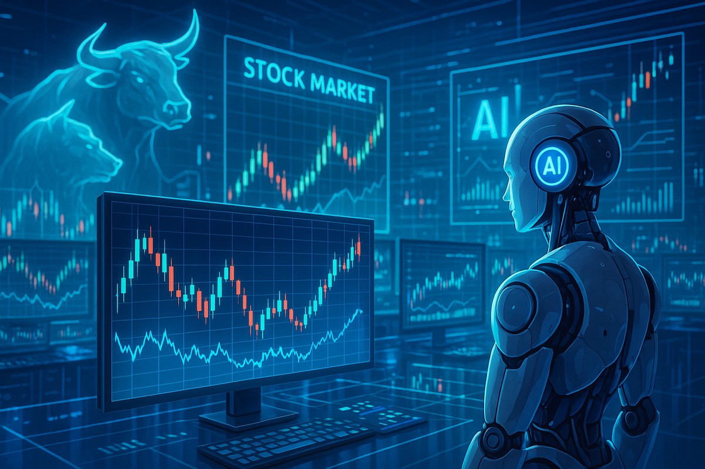

Market Snapshot (Not Live Data)

Artificial Intelligence is transforming industries and financial markets.
Artificial Intelligence is one of the fastest-growing technologies in the world today. It is changing how companies operate, how people work, and how investors think about the future. My dad, who works in finance, reminds me all the time to study AI because it is going to completely change how the world operates.
In business, AI is being used to improve efficiency, analyze data, and automate tasks that used to require human work. Companies like Google, Microsoft, and NVIDIA are leading this growth through AI tools, cloud systems, and advanced computer chips. This has made technology stocks some of the most valuable in the market.
AI is also changing the job market and society as a whole. Some jobs may become automated, while new jobs are being created in technology, data analysis, and engineering. This creates both opportunity and risk, which is something investors need to understand when thinking about the future of any company.
From an investing perspective, AI has created strong growth opportunities but also increased competition and uncertainty. Companies involved in AI may grow quickly, but they also face high expectations and market pressure. Because of this, investors need to think carefully about which companies have real long-term potential versus which ones are just riding a trend.
Overall, I believe AI is one of the most important forces shaping both society and financial markets right now. It is something I plan to keep learning about as I build my understanding of investing and the economy.
Why it matters: NVIDIA's chips power nearly every major AI system being built today. Almost every AI model — including the ones behind ChatGPT — runs on NVIDIA hardware.
My take: High growth potential but also high volatility. Probably the most important company in tech right now.
Why it matters: Microsoft invested billions into OpenAI and has integrated AI into Office, Azure, and Bing. They are turning AI into real business revenue.
My take: A more stable way to invest in AI compared to buying a pure AI startup. Lower risk, still strong upside.
Why it matters: Google has been doing AI research for over a decade and is now competing directly with OpenAI through its Gemini model.
My take: AI could either make Google stronger or threaten its core search business — it is the most interesting case to watch.